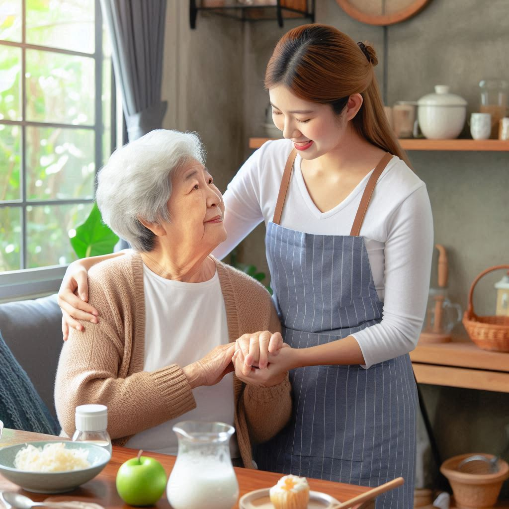

Monitoreo de Signos Vitales
Control periódico y preciso de los indicadores de salud:
- Frecuencia cardíaca: Supervisión constante.
- Presión arterial: Registro diario para seguimiento médico.
- Temperatura corporal: Detección de posibles infecciones.
- Niveles de oxígeno: Uso de oxímetros modernos.
Asistencia en Actividades Cotidianas
Apoyo personalizado en actividades diarias básicas:
- Higiene personal: Baño, aseo y cuidado personal.
- Vestimenta: Ayuda para cambiarse o seleccionar ropa.
- Preparación de alimentos: Dietas balanceadas y adaptadas.
- Atención constante: Supervisión durante todo el proceso.

Acompañamiento en Caminatas y Recreación
Fomentamos el bienestar físico y emocional a través de:
- Caminatas cortas: Mejorando la movilidad y circulación.
- Actividades recreativas: Juegos, lectura o pasatiempos.
- Compañía activa: Escucha y empatía para el paciente.
Supervisión en la Toma de Medicamentos
Garantizamos que los tratamientos médicos sean cumplidos adecuadamente:
- Recordatorios: Horarios precisos para la medicación.
- Verificación: Confirmación de las dosis correctas.
- Reporte médico: Información sobre efectos adversos.
- Atención segura: Cuidado ante posibles errores o olvidos.